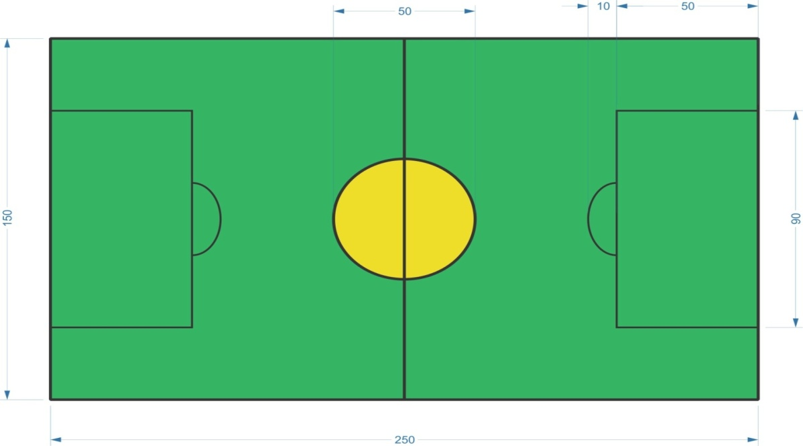

Introduction
When it comes to playing game with robots, the list seems ever-growing. Now the time has come to show up control skills and play the most exciting game of all time with robots. SRISTI 2K16 presents ‘Robo Soccer’, where players have to design a manually or wirelessly controlled robot capable of hitting the ball from anywhere of the field to score a goal in the opponents court and also defense for own court.
Problem Statement
Build two manually controlled bots wired or wireless capable of scoring and defending their goalpost. Bots have to play as a team on the arena simultaneously fighting with the bots of the opposite team. Participants should compete the game as per rules and regulations. Vent is divided into rounds. The team with most number of Goals wins.
1. Area of Arena will be 2500 X 1500 mm.
2. Goalpost will be placed outside the 2500 mm mark.
3. It has two goal post which are out of the field having dimension 600 X 400 X 300 mm (L*B*H).
NOTE: The arena shown in the figure is only a sample version. Actual Arena may differ slightly in dimensions from the one shown in figure.

1. The diameter of ball (Table tennis Ball) will be 38-40 mm and of negligible weight.
2. A robot cannot hold the ball for more than 5 secs (HINT: Holding a ball means taking full control over the ball by removing all degrees of freedom). The ball cannot be held underneath a robot. 3. The ball must be visible at all times and cannot be grabbed at any time. Opponent must be able to access the ball.
1. The dimensions of the body of the bots must not exceed 25*25*25 cm. The bot may have foldable hands. It may not expand at any time during the match beyond 35cm for hitting the ball. Violating this clause will lead to immediate disqualification.
2. The bots should be controlled by a wired or wireless remote control throughout the turn. In case of wireless control, the bots must be able to work on two different frequencies.
3. Neither bots, manual or autonomous bots, must not be made from Lego parts or readymade assembly kits.
4. Only an AC Power supply of 220 V for either bot will provided at the event. The voltage should not exceed 24 volts in DC.
5. Weight of the Robot depends on the Participant’s choice, but should not exceed 2 Kg. Wire should be slack during the course of match. It should be of minimum 4 metres.
Rules
1. Each team can have a maximum of 5 members and can be formed of participants from different Institutions.
2. Each team must be led by one person, the captain, who shall attend to the call by the organizers whenever necessary.
3. At the signal from the on commence and the bot will start from the starting line.
4. Measurement of the bot will be done before the start of event by a panel of referee. It is responsibility of the teams to get their robots reinspected if their robots are modified at any time during the tournament.
5. The robot should not damage the arena by any means, damaging may lead to negative points.
6. A Free Kick will be given to other team in case of fouls during which bots of the team committing the foul will be freezed and ball will be given to the other team.
7. If two fouls are committed by team, a penalty shootout will be given to the opponent team.
8. Teams will have to report at least 15 minutes before the time slot allotted to them at the beginning of the event, failing to do so may result in disqualification.
9. The decision of the event organizers and judges shall be treated final and abiding. Organizers reserve the rights to change the rules at any point of time as they deem fit.
1. This will be a qualifying round of total duration of 3 minutes.
2. Only one bot is allowed to participate in this round.
3. 6 Balls will be placed at different position along with some obstacles.
4. Each goal will gather 10 points and for every spare 10 seconds, team will be awarded 5 points.
1. Teams will have to play a football match against other team. Teams will be divided into pools details of which will be provided at the starting of event.
2. Teams will be required to participate with two bots in this round.
3. There will be two half each of duration 5 minutes (Total-10 mins).
4. Time break between 2 halves is 1 minute.
5. If the attacking bot of both teams or the ball is immobile for 5 secs, then the ball will be replaced at starting point.
6. Only one bot of a team can be at its goal post at a time.
7. Timeout of 2 minutes can be taken by each team during the match for once. Any extra timeout and own goal will be considered as a goal by the opposition.
8. In case of Tie, 3 minutes’ extra time will be given. The team to score first goal during the extra time will win the match. If no goal is scored during extra time, winner will be decided by penalty shoot outs during which 2 penalty shoots will be given to each team in turn.
9. During penalty shoots, only the striker bot and goal keeper bot will be placed in arena and the ball will be placed at the centre of the arena. After the first half, goals will be swapped.
10. Points will be given for goals only and team with more goals will be winner.
11. This continues till only two teams are left.
1. This round has same rules as round 2. • There will be two half each of duration 5 minutes (Total-10 mins). • Time break between 2 halves is 2 minutes. • In case of tie, 3 min extra time will be given. If no goal is scored, winner will be decided by 5 penalty shootout.
Prize
1. Certificate of Excellence will be provided to the participants who qualify for the FINALS.
2. Certificate of Participation will be provided to all the participants taking part in the event.
3. The teams which get disqualified due to disobeying any of the rules provided will not be entertained with any kind of certification.
Prize money worth: Rs. 16,000